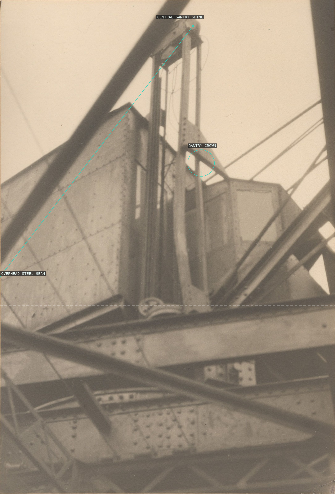
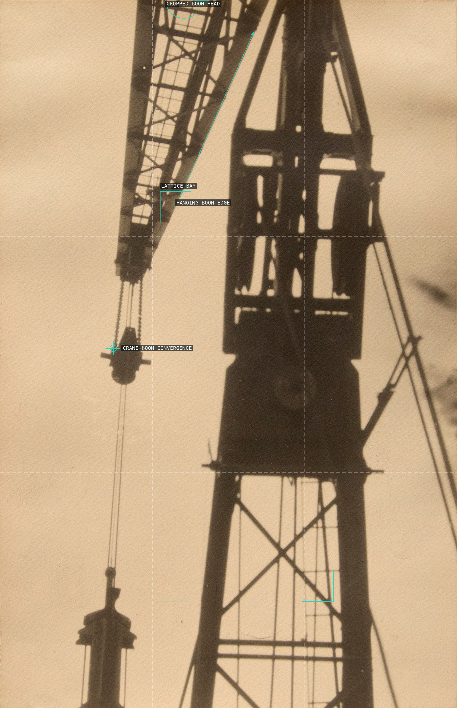
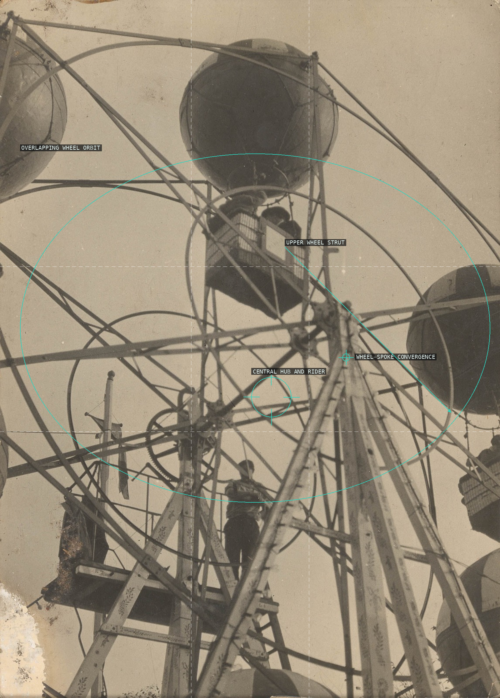
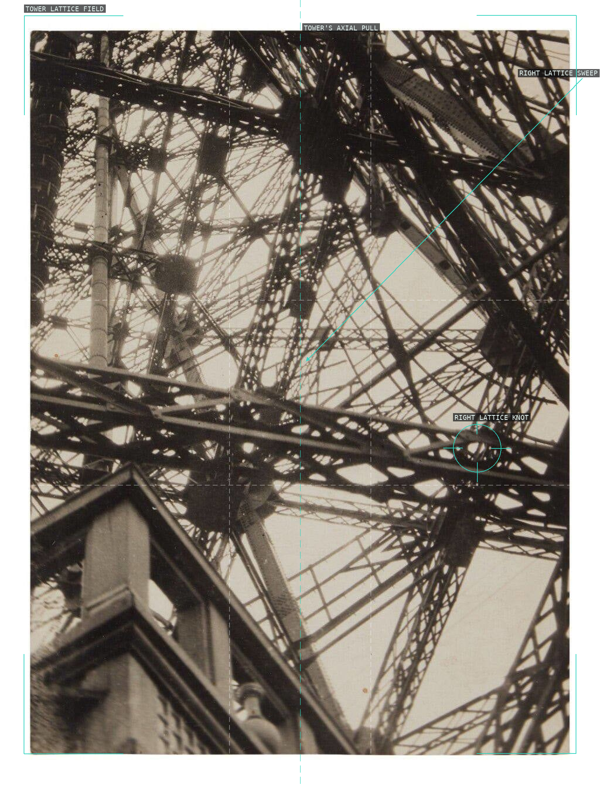
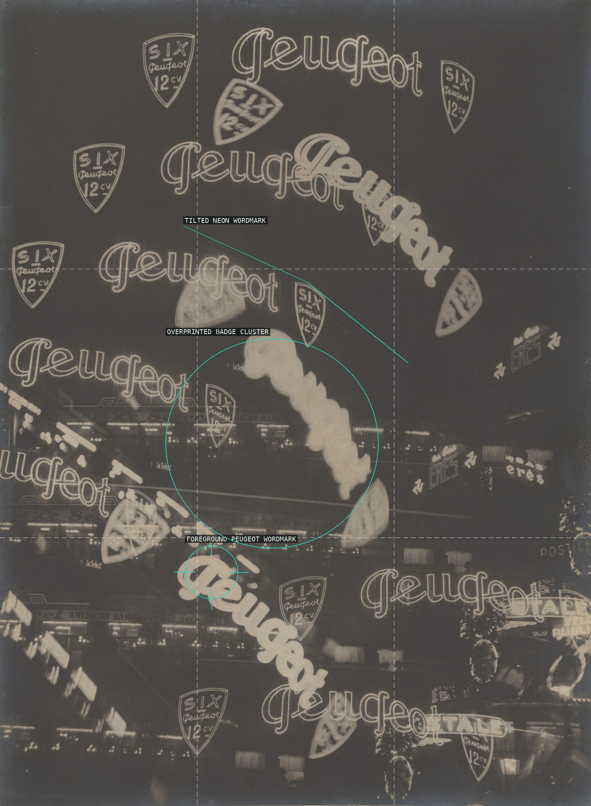

Germaine Krull — overlay proofs

Untitled (Abstract Industrial Building), 1925

Untitled (from Métal), 1925–28

Carnival Ride, 1928

The Eiffel Tower, 1928

Advertisement for the Six Peugeot 12-cylinder, 1930